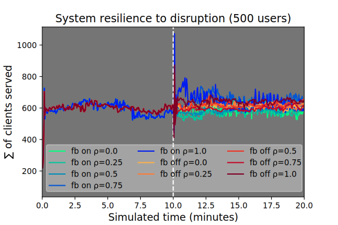
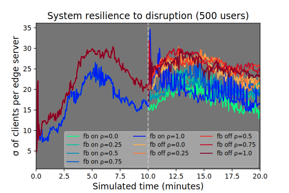

Self-organising Coordination Regions
a Pattern for Edge Computing
Roberto Casadei, Danilo Pianini,
Mirko Viroli, Antonio Natali
Motivating case studies
Metropolitan collaborative surveillance
- Discovery and integration of smart cameras
- Multiple video streams to be fused and synchronized
- Object detection, tracking, analysis
- Processing can be on cloud, on fog, on edge
See paper by Dautov et al.
Motivating case studies
360° multi-view multiplayer gaming
- Multi-view (see what others are seeing)
- Augmented or Virtual Reality: free movement
- Delay intolerance
- Excessive bandwidth usage
See paper by Bilal et al.
Problem and forces
- heterogeneity: asymmetry among device capabilities
- locality: information is more valuable when is close to its source, moving it is expensive
- hybrid coordination: information aggregation is required, full centralization brings unacceptable costs
- dinamicity: environment, network, and system structure changes at runtime
Well Known in literature?
- Decentralised service orchestration, Jaradat et al.
- TCMote, a WSN middleware, Diaz et al.
- TS-Mid, tuple-based WSN middleware, Lima et al.
- Leader-based swarm coordination, Walker et al.
- Distributed sensing, Casadei et al.
- Self-stabilizing target counting, Pianini et al.
- Group management for target tracking, Liu et al.
- Crowd tracking and steering, Beal et al.
- …
General solution to a commonly occurring problem
–> We propose a design pattern (discovered in literature)
SELF-ORGANISING COORDINATION REGIONS
Shared solution elements
1. Election of leaders – from a set of candidates
2. Formation of regions – by assigning each user to a single leader
3. Upstream information flow – from users to leaders
4. Downstream information flow – from leaders to users
1 of 4 – Leader election
(logical) network of devices
1 of 4 – Leader election

orange devices are leader candidates
1 of 4 – Leader election

red devices are elected leaders
2 of 4 – Formation of regions

one color per region, one leader per region
3 of 4 – Upstream communication
from users to leaders
4 of 4 – Downstream communication

from leaders to users
Implementation issues
Leader Election
- Candidate selection – heterogeneity of devices and network
- Consensus strategy – centralized or distributed?
- Dinamicity and adaptivity – select leaders statically, elect them once, elect them at time intervals, elect them continuously
Implementation issues
Formation of regions and downstream
Similar issues, information flows from leader to users
- Gossip – monotonic information
- Time-replicated gossip – from Coordination 2016
- Gradient-cast – distance-metric based, different gradients -> different performance
Implementation issues
Upstream: accumulation
Tougher than downstream in non star-networks
- Gossip – monotonic, requires idempotence, expensive
- Time-replicated gossip – tackles monotonicity and idempotence, but even more expensive
- Spanning-tree accumulation – scalable but fragile
- Multi-path techniques – slower convergence, higher reliability
Dynamics

- Perturbations are unavoidable
Dynamics

- Computation results may influence future decisions
Dynamics

- Including region sizes
Dynamics

- Oscillations however are to be considered
Implementation template
class SCR extends AggregateProgram with BlockG with BlockC with BlockS {
def main = {
// Field of leaders, with at least grain distance
val leader = branch(isCandidate) { S(grain) } { false }
// Gradient from leaders based on a given distance metric
val potential = distanceTo(leader, metric)
// gathers local values towards leaders by aggregation
val convergeCast = C(potential, local, aggregationFun)
// on leaders, takes a decision based on received data
val decision = decisionMaking(leader, convergeCast)
// broadcast decisions and take action
val divergeCast = G(leader, metric, decision)
localAction(divergeCast)
}}
Written in Scala with the Scafi DSL
Aggregate programming is a natural fit for SCR
Manifesto of aggregate computing
program the aggregate, not single devices
- Computing machine – aggregate of devices as a single entity, fading to actual space
- Elaboration process – atomic manipulation of a collective data structure
- Networking and protocols: hidden under the hood
Case study
Urban video streaming collection
- Urban center (mid-sized Italian city)
- 200 edge servers, randomized grid deployment
- Dynamically selected set of edge servers as leaders (one every ~200m)
- Feedback system: the more users stream content to an edge server, the more its served area shrinks
- After ten minutes, we suddenly turn off a percentage of the leaders, and see how the system reacts
- The experiment is reproducible
Parameters / Symbols
| Parameter | Meaning |
|---|---|
| α | exponential backoff parameter. lower values, smoother output |
| fb | on if feedback enabled, off otherwise |
| ρ | probability for a leader to shut down |
| E | expected value / statistic mean |
| σ | standard deviation |
| Σ | sum |
Feedback loop tuning

- trade-off between smoothness and reactivity
Resilience to disruption

- quick recovery from large and small perturbations
Load balancing

- cold lines have lower variance –> better load sharing
Conclusion
- General solution to a commonly occurring problem
- Elect leaders
- Set up influence areas (regions)
- Build downstream communication
- Build upstream communication
- Hybrid coordination: between centralized and decentralized
- One possible implementation provided and evaluated in the aggregate computing framework
- Particularly relevant for mixed edge/cloud systems